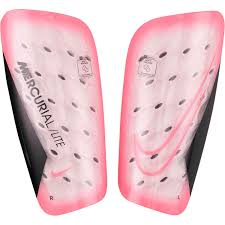
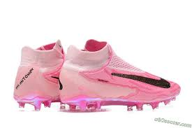

In order to be able to play soccer you have to have shin gaurds. A shin gaurd is a plastic rectangle with curved corners that have a foam backing. thay are to protect you from getting kicked in the shin. They are about 4 inches tall and 1.5 inches wide.
If you can see your shin gaurds while you are playing, the ref will blow the wissle and you will be pulled off and a nother player will take your spot. You have to have long socks, long enouph to where you can't see your shin gaurds. YOu also cant were jewlrey like earing, neclasses, ring ect. If you get cought wearing jewrey you wil get a yellow card.
What is a yellow card, what are cards? A card is when you do somthiing bad during a game to another player. if you push a player that is an automatic yellow, if you get in a fight that is a red card for both players. if you get fouled in the 18 yard box, it is a yellow card and a PK. a pk is when someone get hit in the box. There is a litte line about 1 ft long. You put the ball on the line and every one but you and the gollie, everyone else is going to stand outside the box. if it hits the post the ball will continue to play.
Another thing you need to be able to play is cleats. They are a shoe but with little nubs on the bottom to hame grip on the field.If you do not meet the requments you will not play, depending on the refarees.
During a game their will be 3 adults, one on the left, one on the right and one i the middle.The one in the middle will be the one with the wissle. He wiil also be the one who gives cards to the player. any one can bee a ref, they just have to take a class for it. The class is totaly free. once you comple the class you will be given a whissle and a ref jersey .